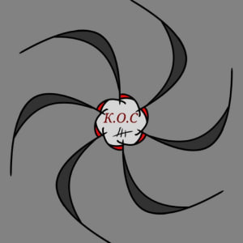
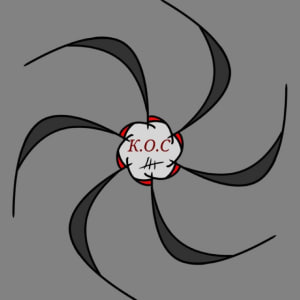

К.О.С.
Напів організація в нашому РП чаті що
займається чималою кількістью
справ, поступити в К.О.С. доволі
важко але аналогічно ця робота дуже
достойна та високооплачуєма.
 
 Щоб прочитати опис роботи
натисніть на неї
Судова частина К.О.С.
Судья;Прокурор;Адвокат;
Судова чатсина К.О.С.
Судова частина К.О.С. це зв'язок Суд мед
експертів, таких як, Судья, Адвокат та
Прокурор, аналогічно кожен відповідає
за свою частину роботи.
Судья- Розглядає ситуацію та видає
рішення.
Прокурор- Шукає докази до ситуації та
приносить їх Судьї.
Адвокат- Захищає сторону
обвинувачення, є як державні так і
частні Адвокатні пости, різниця лише в
тім що державний буде надано у
випадку відсутності частного.
За для того що б поступити на Судову
частину К.О.С.
Потрібно знати Конституцію та Закони
держави, здати екзамени, мінімальний
бал 90%.